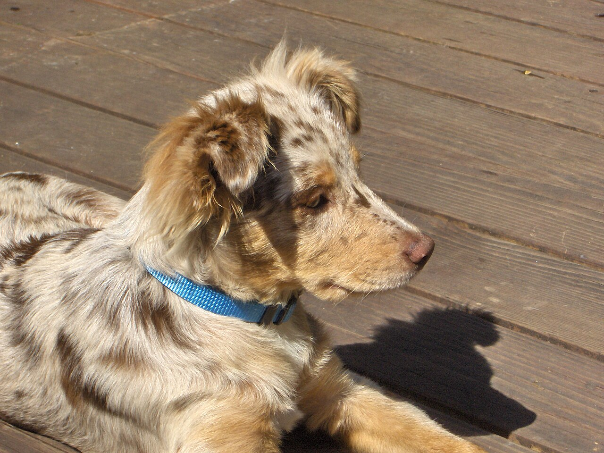

Build & Structure
The Australian Shepherd is a medium-sized, well-muscled dog standing 18–23 inches at the shoulder and weighing 40–65 pounds, with females typically running smaller than males. They have a moderately long, weather-resistant double coat, a naturally occurring bobtail in some lines (others are docked or left natural with a full tail), and expressive eyes that can be brown, blue, amber, or a striking combination of colors — including two different-colored eyes, a trait not uncommon in merle Aussies.
Browse by Coat Color
Use the filters below to see each of the four recognized Australian Shepherd coat colors.

Blue Merle
A patchwork of black and grey marbled over a lighter base, often paired with white and copper trim on the face, chest, and legs. This is one of the most iconic and recognizable Aussie colorations.
Photo: Gerrit Werner Sonka / Wikimedia Commons (CC BY 4.0)

Red Merle
The warm-toned cousin of blue merle — liver-red patches marbled over a lighter cinnamon or cream base, again often trimmed in white and copper. Puppies are frequently born with striking, almost dappled markings that darken slightly with age.
Photo: Andrea Arbogast / Wikimedia Commons (CC BY-SA 2.0)

Black Tricolor
A solid black base (no merle marbling) with clean copper points above the eyes, on the cheeks and legs, and white trim on the chest, face, and legs. This is a bold, high-contrast look popular in working lines.
Photo: Aelbert Cuyp / Wikimedia Commons (Public domain)

Red Tricolor
A solid liver-red base (no merle) with copper points and white trim, giving a warm, uniform look without the marbled merle pattern. Noses and eye rims on red dogs are typically liver-colored rather than black.
Photo: Hermankickass / Wikimedia Commons (CC0)